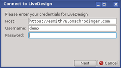
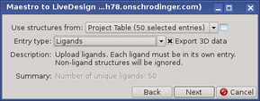
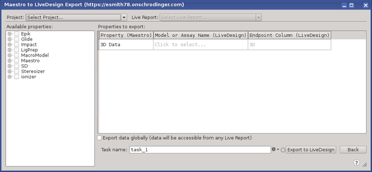

Maestro to LiveDesign Export Panel
Export structures and data from a Maestro project or file to a LiveDesign project.
To open this panel, browse to Tasks → Discovery Informatics and QSAR → Other: Export to LiveDesign in the Task Tool.
Using the Maestro to LiveDesign Export Panel
The Maestro-to-LiveDesign export facility is a series of three connected panels.
In the first, you log on to the LiveDesign server. For this you need the URL of the host and your user name and password.

In the second panel you choose the source of the structures whose data you want to export, and specify the entry type of the structures. You can also choose whether to export the 3D structures themselves as data.

In the third panel you select the LiveDesign project and report, choose the properties to export and the destination in the report to which the properties will be exported. You then perform the export.

You can navigate between these three panels using the Next and Back buttons, to log on to a different server (if available), choose different structures, and export to different projects and reports.
Maestro to LiveDesign Export Panel Features
Structure selection panel
In this panel you choose the source of the structures.
- Use structures from option menu
-
Choose the source of the structures for export to LiveDesign.
- Project Table (n selected entries)—Use the entries that are currently selected in the Project Table. The number of entries selected is shown on the menu item. An icon is displayed to the right which you can click to open the Project Table and select entries.
- Open Project Table button
-
Open the Project Table panel, so you can select or include the entries for the source of the structures.

- Entry type option menu
-
Choose the type of entry to be exported to LiveDesign. This is used as a filter on the structures, so that structures that do not match the entry type are ignored.
- Export 3D data option
-
Export the ligand structures as 3D data. You can map this to the LiveDesign assay and column in the property selection and export panel.
- Description text
-
This text gives a description of the chosen entry type and its requirements.
- Navigation buttons
-
The Back button takes you back to the logon panel, where you can connect to a different server. The Next button takes you to the property selection and export panel.
Property selection and export panel
- Project option menu
-
Choose the LiveDesign project you want to export Maestro data to. The menu lists the projects that are available on the server you connected to.
- Live Report option menu
-
Choose the report that you want the data to be added to. Clicking the menu displays a set of tools for selecting the report.
- New Live Report button—click to create a new report when the data is imported into LiveDesign. A text box is displayed next to the menu where you can name the report.
- Search box—type in this box to filter the list of reports to match the text you type.
- Report tree—reports in the project, displayed as a tree.
When you select a report, its name is displayed on the menu, and the tool box closes.
- Available properties list
-
Choose the Maestro properties that you want to export. The properties are shown in a tree. Only the properties that you choose to export will be exported: there is no default to export all properties.
- Properties to export table
-
This table lists the Maestro properties that have been chosen for export, and allows you to map them to the LiveDesign model or assay and endpoint column. If you chose to export 3D data, this is shown as a property in the table as well as any you choose from the Available properties list. The table has three columns.
- Property (Maestro)—name of the Maestro properties that were selected in the Available properties list.
- Model or Assay Name (LiveDesign)—Name of the model or assay in the LiveDesign report that you want to add the data to.
- Endpoint Column (LiveDesign)—Name of the column in the LiveDesign report.
- Export data globally option
-
Export the data so that it is accessible to any report.
- Task name text box
-
Specify a name for the export task.
- Export to Live Design button
-
Start the export. The job is run asynchronously, so you can continue with other work while it runs.
- Back button
-
Go back to the panel for selecting structures from the Maestro project. This allows you to choose a different set of structures and add their properties to LiveDesign.
Related Topics